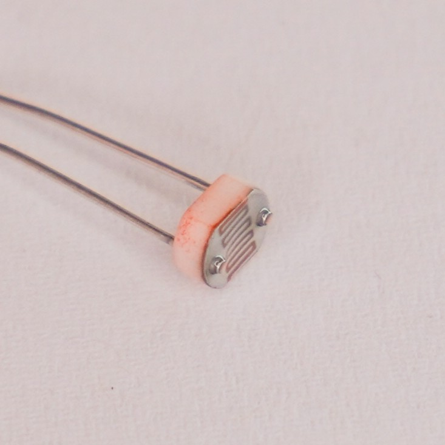
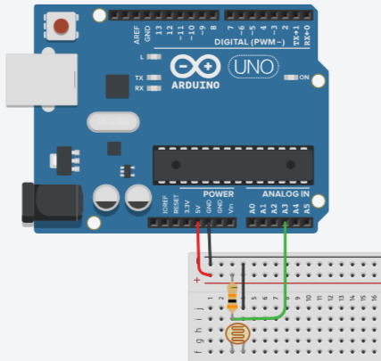
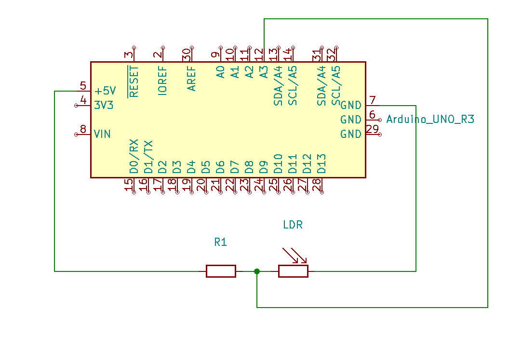
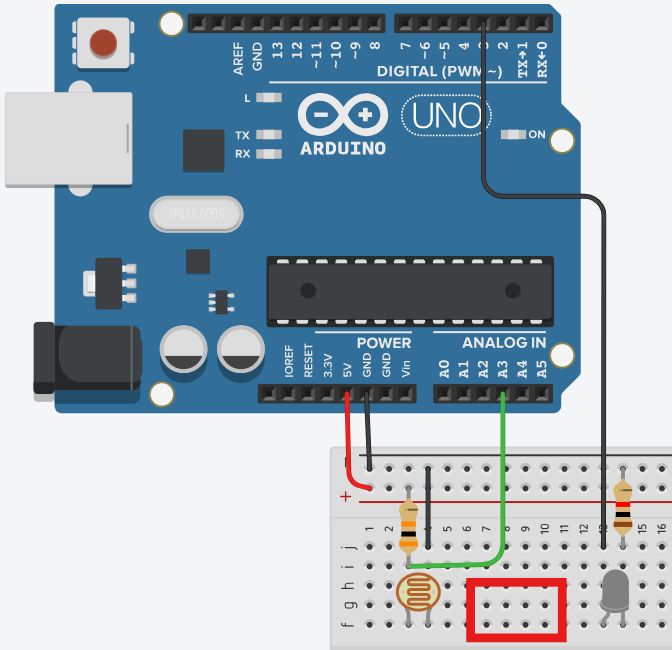
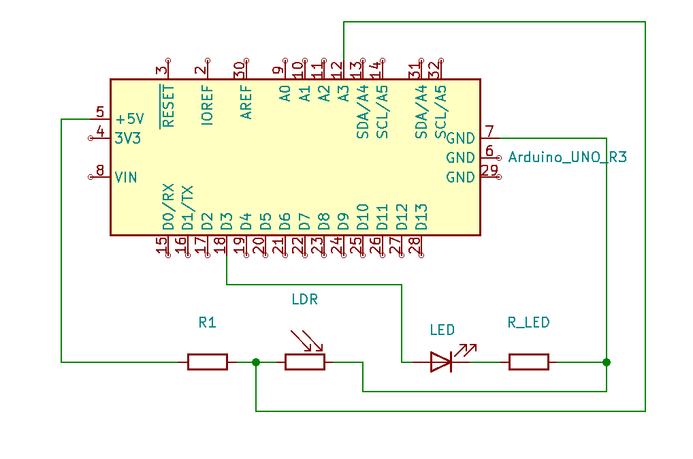
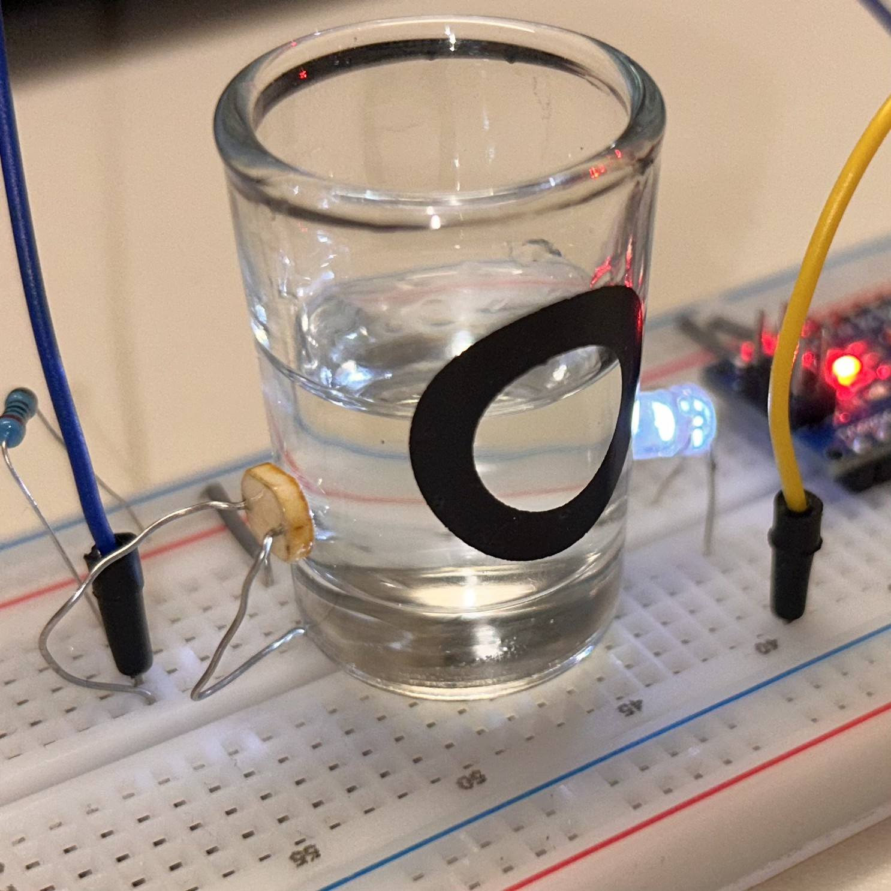
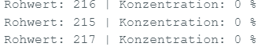

Ein Lernmodul zur Sensorkalibrierung und quantitativen Messdatenauswertung
📚
Vom LDR zum Fotometer
Ein Lernmodul zur Sensorkalibrierung und quantitativen Messdatenauswertung
Autor: John van Dijk
Lizenzhinweis: CC BY-SA 4.0
Dieses Modul liefert das technische Fundament für die UE Fotometer: Sie lernen, einen optischen Sensor zu bauen, am Microcontroller zu betreiben und die Rohdaten für den Unterricht nutzbar zu machen.
Ein LDR (Light Dependent Resistor, auch Fotowiderstand genannt) ist ein elektronisches Bauteil, dessen Widerstand sich mit der Helligkeit ändert.
Je mehr Licht auf den LDR fällt, desto kleiner wird sein elektrischer Widerstand. Im Dunkeln ist der Widerstand sehr hoch (bis zu 200 kΩ), bei starkem Licht sinkt er auf wenige hundert Ohm.
Der Zusammenhang ist invers: Viel Licht → kleiner Widerstand, wenig Licht → großer Widerstand.

1.2. Der Spannungsteiler
Ein Spannungsteiler ist eine einfache Schaltung aus zwei Widerständen, mit der man eine Eingangsspannung in eine kleinere Ausgangsspannung umwandeln kann.
Im Fotometer wird der LDR mit einem festen Widerstand in Reihe geschaltet. Die Ausgangsspannung zwischen den beiden Widerständen hängt davon ab, wie hell es ist – und damit vom Widerstand des LDR.
So kann der Mikrocontroller die Helligkeit als Spannung messen!


Klicken: Foto ↔ Schaltplan
Bei dieser Schaltung, steigt die Ausgangsspannung wenn es dunkler wird. Wenn der LDR mit dem Widerstand vertauscht werden würde, wäre es umgekehrt
1.3. Simulation
⚡ Interaktive LDR-Schaltung (Spannungsteiler)
Experimentieren Sie mit der Lichtstärke und dem Festwiderstand (R1),
um zu sehen, wie sich Spannung und ADC-Wert verändern. Optimiere die Sensitivität
des Lichtsensors mit verschiedenen R1-Werten.
🌙 Dunkel☀️ Hell
1 kΩ200 kΩ
Aktuell R1: ...
Simulierte Messwerte:
RLDR=...
Vout=...
ADC (0-1023)=...
🧠
Teste dein Wissen: Der Widerstands-Optimierer
In der Simulation oben haben Sie gesehen, dass sich die Messung unterschiedlich verhält, wenn man R1 anpasst.
Ziel ist es immer, den Messbereich maximal auszunutzen. Das bedeutet: Wir wollen große Sprünge in den Zahlenwerten sehen, wenn sich das Licht ändert.
Versuchen Sie, für die folgenden zwei Szenarien den besten Festwiderstand aus dem Labor-Vorrat zu wählen.
Szenario A: Dunkle Umgebung
Sie bauen ein Fotometer für sehr dicke, dunkle Flüssigkeiten (hohe Trübung). Es kommt nur wenig Licht am Sensor an.
Der LDR hat in dieser Dunkelheit einen sehr hohen Widerstand (ca. 100 kΩ).
Welchen Festwiderstand (R1) wählen Sie, um Änderungen fein messen zu können?
1 kΩ (Klein)
10 kΩ (Mittel)
100 kΩ (Groß)
Szenario B: Helle Umgebung
Sie messen im Freien bei Sonnenlicht (Modul 2 Wetterstation) oder direkt an einer starken LED.
Der LDR wird stark beleuchtet und hat einen sehr kleinen Widerstand (ca. 1 kΩ).
Welchen Festwiderstand (R1) wählen Sie hier für maximale Genauigkeit?
1 kΩ (Klein)
10 kΩ (Mittel)
100 kΩ (Groß)
🧰
2. Der Messaufbau
Nachdem die elektronischen Grundlagen (LDR und Spannungsteiler) geklärt sind, folgt der Aufbau des Fotometers.
Für die Demonstration des Messprinzips genügt eine stark reduzierte, modellhafte Anordnung von nur drei Komponenten.
Wir erweitern dafür einfach den Aufbau aus Teil 1 um eine LED. Die Optimierung dieses Aufbaus wird später zum Gegenstand der Unterrichtseinheit.


Klicken: Foto ↔ Schaltplan
Fotometer: Probenbehälter in Rot zwischen LDR und LED
Für den Widerstand nach der LED wird 100 Ohm empfohlen. Der Festwiderstand des Spannungsteilers (R1) entscheidet über die Sensitivität des Sensors. Für eine große Spannweite der Messwerte in helleren Umgebungen sind kleinere Widerstände sinnvoll. Hier wurde 2k Ohm verwendet.
Test Arduino Code
Um den Aufbau zu testen, benötigen wir einen einfachen Code. Dieser schaltet die Lichtquelle dauerhaft ein
und sendet die gemessenen Helligkeitswerte an den Computer (Serieller Monitor).
/*
Einfacher Fotometer-Test
Zweck: LED einschalten und LDR-Werte im Seriellen Monitor anzeigen.
*/
// Pins definieren
const int sensorPin = A3; // Der LDR (Spannungsteiler) hängt an A0
const int ledPin = 3; // Die LED (mit Vorwiderstand) hängt an Pin 3
void setup() {
// 1. Serielle Kommunikation für die Datenübertragung zum PC starten
Serial.begin(9600);
// 2. LED konfigurieren und einschalten
pinMode(ledPin, OUTPUT);
digitalWrite(ledPin, HIGH); // Dauerlicht an für konstante Messung
}
void loop() {
// 3. Den aktuellen Wert vom Sensor lesen (Bereich 0 bis 1023)
int rohwert = analogRead(sensorPin);
// 4. Wert zur Kontrolle an den PC senden
Serial.print("Aktueller Lichtwert: ");
Serial.println(rohwert);
// 5. Kurze Pause, damit die Zahlen lesbar bleiben
delay(500);
}
Test-Anleitung: Kopieren sie diesen Code in Arduino IDE. Passen Sie eventuell die Pin-Belegung im code an. Laden Sie diesen Code auf den Arduino (Upload) und öffnen Sie den Seriellen Monitor (Lupe oben rechts).
Halten Sie nun einen Gegenstand oder eine gefüllte Küvette zwischen LED und LDR. Der Zahlenwert muss sich deutlich verändern.
Das Prinzip der Transmissionsmessung ist einfach: Je weniger Licht am LDR ankommt (durch Absorption oder Streuung),
desto höher ist die Konzentration der untersuchten Substanz (z.B. Fett im Milchtest oder Farbstoff im Cola-Test).
Ansätze zur späteren Optimierung
Fremdlicht (Störfaktor): Schon das Umgebungslicht verfälscht die Messung massiv.
Optimierung: Bau eines lichtdichten Gehäuses (z.B. aus schwarz lackiertem Holz oder Karton).
Geometrische Stabilität: Geringfügige Bewegungen von LED oder LDR führen zu Schwankungen im Rohwert.
Optimierung:Feste Montage der Komponenten und Einhaltung eines konstanten Abstands.
Lichtbündelung: Die LED strahlt diffus ab, was die Messgenauigkeit mindert.
Optimierung: Einsatz von Lochblenden oder lichtdichten Trennwänden, um den Strahl zu fokussieren.
Wellenlänge (Farbe): Die gewählte LED-Farbe muss zur Probe passen.
Optimierung: Auswahl der optimalen LED-Farbe für die spezifische Messung (z.B. rote LED für blaue Flüssigkeiten).
🧪
3. Messwerterfassung & Kalibrierung
Hier verwandeln wir den Arduino vom einfachen Stromkreis-Bauteil in ein echtes wissenschaftliches Messinstrument.
3.1. Das Problem: Der "dumme" Rohwert
Ihr Arduino liefert über analogRead() einen Wert zwischen 0 und 1023.
Das ist technisch korrekt, aber physikalisch nutzlos. Ein Wert von "850" sagt nichts darüber aus,
ob die Milch fettarm ist oder wie viel Sirup im Wasser ist.
3.2. Die Lösung: Die 2-Punkt-Kalibrierung
Damit der Sensor "versteht", was er sieht, müssen wir ihm die Grenzen der Realität beibringen.
Wir benötigen zwei Referenzpunkte.
Je nach Unterrichtsziel können Sie nun zwei unterschiedliche didaktische Wege einschlagen.
Weg A: Der "Wissenschaftler" (Excel)
Ziel: Datenerfassung und Analyse.
Der Arduino sendet nur Rohwerte an den PC. Die Schüler erstellen in Excel eine Kalibrierkurve.
Vorteil: Schüler erkennen Messfehler und Nicht-Linearitäten sichtbar.
Weg B: Der "Automat" (Map)
Ziel: Automatisierung.
Der Arduino rechnet selbst. Das Gerät zeigt direkt "%" an.
Vorteil: Das Gerät arbeitet autonom ohne PC und könnte mit den Ergebnissen potentiell eine Pumpe betreiben (UE Neutralisationsautomat).
3.4. Umsetzung von Weg B
Für Weg B nutzen wir den Befehl map(). Der map()-Befehl verteilt die gemessenen Rohwerte eines Sensors (z.B. \(200\) bis \(380\) proportional auf die angegebene Zielspanne (z.B. \(0\) bis \(100\)).
// --- KONFIGURATION (wie in Sektion 2) ---
const int sensorPin = A3; // Der LDR hängt an A3
const int ledPin = 3; // Die LED hängt an Pin 3
void setup() {
Serial.begin(9600);
pinMode(ledPin, OUTPUT);
digitalWrite(ledPin, HIGH); // Licht an
}
void loop() {
// 1. MESSEN (Rohwert erfassen)
int rohwert = analogRead(sensorPin);
// 2. KALIBRIEREN (Hier tragen Sie Ihre gemessenen Grenzwerte ein)
// Beispiel: Wasser war hell (niedriger Wert), Sirup war dunkel (hoher Wert)
int wertHell = 200; // Kalibrierwert für 0% Konzentration (Wasser)
int wertDunkel = 300; // Kalibrierwert für 100% Konzentration (Sirup)
// 3. UMRECHNEN (Mapping)
// map(Wert, vonMin, vonMax, zuMin, zuMax)
int konzentration = map(rohwert, wertHell, wertDunkel, 0, 100);
// 4. BEGRENZEN (Constrain)
// Falls es mal noch heller ist als "Hell", verhindert dies negative %-Werte.
konzentration = constrain(konzentration, 0, 100);
// 5. AUSGABE (Kombiniert für Kontrolle)
Serial.print("Rohwert: ");
Serial.print(rohwert);
Serial.print(" | Konzentration: ");
Serial.print(konzentration);
Serial.println(" %");
delay(500);
}
Beispielmessungen: Experiment mit Waldmeistersirup und zugehöriger Serieller Monitor

Experiment: klares Wasser

Serieller Monitor: 0% Konzentration